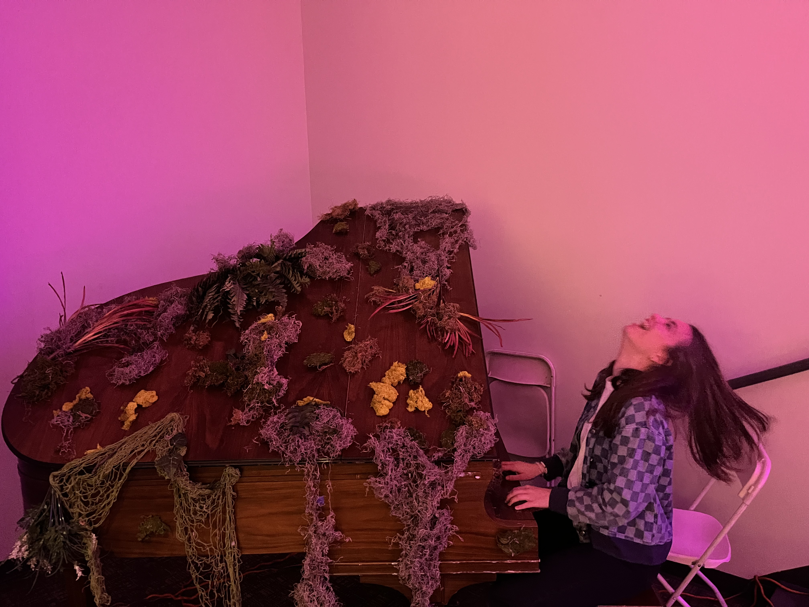

~ Emerson Pugh Music ~
The Songwriting Process
Writing music is a mix of creativity, emotion, and structure. My process usually starts with an idea or feeling, then turns into lyrics, melody, and finally a full song.
My Favorite Artists
- Lizzy McAlpine
- Force of Nature
- Drunk, Running
- Staying
- Spring Into Summer
- Soccer Practice
- Vortex
- orange show speedway
- all my ghosts
- Djo
- Taylor Swift
- Conan Gray
- Gracie Abrams
- Radiohead
- Noah Kahan
- Sombr
- Clairo
- Olivia Dean
Playing Piano
